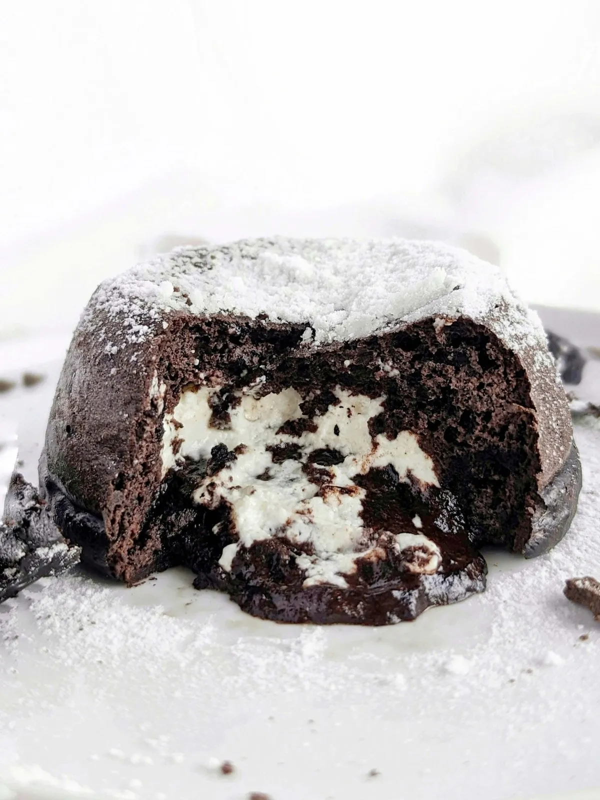

Protein Oreo Lava Cake
By Haylee from Hayl's Kichen

Description
This protein oreo lava cake is a delicious and healthy dessert that is also sugar-free and gluten-free. Makes one serving (one ramekin).
Ingredients
For the cake:
- 1/4 cup (22g) chocolate protein powder
- 2 tbsp (10g) black cocoa powder
- 1 1/2 tbsp (11g) whole wheat pastry flour
- 1/4 tsp baking powder
- 1/4 cup (60ml) unsweetened almond milk
- 1 tbsp (14g) greek yogurt
- 1 egg white (31g, 2 tablespoons)
- 1/4 tsp vanilla extract
For the filling:
- 2 tsp (11g) reduced fat cream cheese, softened
- 2 tsp (11g) non-fat plain greek yogurt
- 2 tsp (2g) vanlla protein powder
- 1 tsp (5ml) unsweetened almond milk
Steps
- Preheat oven to 350 degrees Fahrenheit.
- Lightly grease 1 cup ramken.
- In a bowl, whisk flour, chocolate protein powder, black cocoa powder, and baking powder (dry mix).
- In another bowl, whisk almond milk, egg white, yogurt, and vanilla (wet mix).
- Add wet mix to dry mix and stir until combined and batter is smooth. Taste and add sweetener (e.g. stevia or sugar) if needed.
- In another bowl, mix softened cream cheese, greek yogurt, vanilla protein powder, and almonk milk for the filling.
- Pour half the batter into the ramekin, add filling, and pour remaining batter.
- Bake for 18-20 minutes until the top is slightly soft.
- Let cool for a few minutes before inverting onto a plate.
Link to original recipe
Back to Home